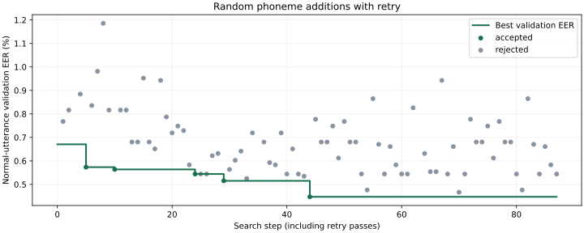

全音素からのランダム追加・再試験
test通常文EERは1.924% → 2.177%（+0.253 pp、上昇）。採用音素は5母音 + b / gy / ry / s / v。
5母音のtest EER1.924%通常文・同じ735発話
選定encoderのtest EER2.177%5母音からの差 +0.253 pp
探索した全候補32音素69モデル学習・87回の採否
採用セット：5母音 + b / gy / ry / s / v
採否はvalidation通常文EER。改善した候補だけを採用し、採用セット変更後に再試験。testは最後の比較だけに使用。
データ不足として候補に保持：ty
基準モデルと選定encoder
| 集合 | 発話 | 全発話 | scoreあり | 5母音 EER | 選定後 EER | EER差 | 5母音 FAR | 選定後 FAR | 5母音 FRR | 選定後 FRR |
|---|
| validation | 通常文 | 750 | 735 | 0.671% | 0.447% | -0.224 pp | 0.971% | 0.971% | 2.400% | 2.133% |
| validation | 別テキスト | 450 | 392 | 1.276% | 0.911% | -0.364 pp | 1.000% | 1.016% | 14.444% | 13.556% |
| test | 通常文 | 750 | 735 | 1.924% | 2.177% | +0.253 pp | 1.981% | 2.038% | 3.733% | 4.267% |
| test | 別テキスト | 450 | 392 | 1.859% | 2.278% | +0.419 pp | 1.524% | 1.825% | 14.889% | 15.556% |
FAR/FRRは母音不足を含む全入力値。閾値は各モデルのvalidation通常文で目標FAR1%を校正して固定。追加音素が発話内にある場合に使用し、元の母音を短くせず、その音声時間が追加される。
探索の推移

全手順（緑＝採用、黄＝データ不足）
| 手順 | 巡 | 追加候補 | 試した子音セット | 直前の最良EER | 候補EER | 差 | 採否 | 採否後の最良EER |
|---|
| 1 | 1 | cl | cl | 0.671% | 0.768% | +0.097 pp | 不採用 | 0.671% |
| 2 | 1 | r | r | 0.671% | 0.816% | +0.146 pp | 不採用 | 0.671% |
| 3 | 1 | ty | ty | 0.671% | — | — | データ不足 | 0.671% |
| 4 | 1 | z | z | 0.671% | 0.884% | +0.214 pp | 不採用 | 0.671% |
| 5 | 1 | b | b | 0.671% | 0.573% | -0.097 pp | 採用 | 0.573% |
| 6 | 1 | my | b + my | 0.573% | 0.836% | +0.262 pp | 不採用 | 0.573% |
| 7 | 1 | t | b + t | 0.573% | 0.982% | +0.408 pp | 不採用 | 0.573% |
| 8 | 1 | ky | b + ky | 0.573% | 1.186% | +0.612 pp | 不採用 | 0.573% |
| 9 | 1 | k | b + k | 0.573% | 0.816% | +0.243 pp | 不採用 | 0.573% |
| 10 | 1 | v | b + v | 0.573% | 0.564% | -0.010 pp | 採用 | 0.564% |
| 11 | 1 | w | b + v + w | 0.564% | 0.816% | +0.253 pp | 不採用 | 0.564% |
| 12 | 1 | n | b + n + v | 0.564% | 0.816% | +0.253 pp | 不採用 | 0.564% |
| 13 | 1 | y | b + v + y | 0.564% | 0.680% | +0.117 pp | 不採用 | 0.564% |
| 14 | 1 | gy | b + gy + v | 0.564% | 0.680% | +0.117 pp | 不採用 | 0.564% |
| 15 | 1 | hy | b + hy + v | 0.564% | 0.952% | +0.389 pp | 不採用 | 0.564% |
| 16 | 1 | p | b + p + v | 0.564% | 0.680% | +0.117 pp | 不採用 | 0.564% |
| 17 | 1 | sh | b + sh + v | 0.564% | 0.651% | +0.087 pp | 不採用 | 0.564% |
| 18 | 1 | j | b + j + v | 0.564% | 0.943% | +0.379 pp | 不採用 | 0.564% |
| 19 | 1 | by | b + by + v | 0.564% | 0.787% | +0.224 pp | 不採用 | 0.564% |
| 20 | 1 | ch | b + ch + v | 0.564% | 0.719% | +0.155 pp | 不採用 | 0.564% |
| 21 | 1 | py | b + py + v | 0.564% | 0.748% | +0.185 pp | 不採用 | 0.564% |
| 22 | 1 | dy | b + dy + v | 0.564% | 0.729% | +0.165 pp | 不採用 | 0.564% |
| 23 | 1 | ny | b + ny + v | 0.564% | 0.583% | +0.019 pp | 不採用 | 0.564% |
| 24 | 1 | s | b + s + v | 0.564% | 0.544% | -0.019 pp | 採用 | 0.544% |
| 25 | 1 | m | b + m + s + v | 0.544% | 0.544% | +0.000 pp | 不採用 | 0.544% |
| 26 | 1 | f | b + f + s + v | 0.544% | 0.544% | +0.000 pp | 不採用 | 0.544% |
| 27 | 1 | h | b + h + s + v | 0.544% | 0.622% | +0.078 pp | 不採用 | 0.544% |
| 28 | 1 | ts | b + s + ts + v | 0.544% | 0.632% | +0.087 pp | 不採用 | 0.544% |
| 29 | 1 | ry | b + ry + s + v | 0.544% | 0.515% | -0.029 pp | 採用 | 0.515% |
| 30 | 1 | d | b + d + ry + s + v | 0.515% | 0.564% | +0.049 pp | 不採用 | 0.515% |
| 31 | 1 | g | b + g + ry + s + v | 0.515% | 0.603% | +0.087 pp | 不採用 | 0.515% |
| 32 | 1 | N | N + b + ry + s + v | 0.515% | 0.641% | +0.126 pp | 不採用 | 0.515% |
| 33 | 2 | cl | b + cl + ry + s + v | 0.515% | 0.525% | +0.010 pp | 不採用 | 0.515% |
| 34 | 2 | r | b + r + ry + s + v | 0.515% | 0.719% | +0.204 pp | 不採用 | 0.515% |
| 35 | 2 | ty | b + ry + s + ty + v | 0.515% | — | — | データ不足 | 0.515% |
| 36 | 2 | z | b + ry + s + v + z | 0.515% | 0.680% | +0.165 pp | 不採用 | 0.515% |
| 37 | 2 | my | b + my + ry + s + v | 0.515% | 0.593% | +0.078 pp | 不採用 | 0.515% |
| 38 | 2 | t | b + ry + s + t + v | 0.515% | 0.583% | +0.068 pp | 不採用 | 0.515% |
| 39 | 2 | ky | b + ky + ry + s + v | 0.515% | 0.719% | +0.204 pp | 不採用 | 0.515% |
| 40 | 2 | k | b + k + ry + s + v | 0.515% | 0.544% | +0.029 pp | 不採用 | 0.515% |
| 41 | 2 | w | b + ry + s + v + w | 0.515% | 0.651% | +0.136 pp | 不採用 | 0.515% |
| 42 | 2 | n | b + n + ry + s + v | 0.515% | 0.544% | +0.029 pp | 不採用 | 0.515% |
| 43 | 2 | y | b + ry + s + v + y | 0.515% | 0.534% | +0.019 pp | 不採用 | 0.515% |
| 44 | 2 | gy | b + gy + ry + s + v | 0.515% | 0.447% | -0.068 pp | 採用 | 0.447% |
| 45 | 2 | hy | b + gy + hy + ry + s + v | 0.447% | 0.777% | +0.330 pp | 不採用 | 0.447% |
| 46 | 2 | p | b + gy + p + ry + s + v | 0.447% | 0.680% | +0.233 pp | 不採用 | 0.447% |
| 47 | 2 | sh | b + gy + ry + s + sh + v | 0.447% | 0.680% | +0.233 pp | 不採用 | 0.447% |
| 48 | 2 | j | b + gy + j + ry + s + v | 0.447% | 0.748% | +0.301 pp | 不採用 | 0.447% |
| 49 | 2 | by | b + by + gy + ry + s + v | 0.447% | 0.612% | +0.165 pp | 不採用 | 0.447% |
| 50 | 2 | ch | b + ch + gy + ry + s + v | 0.447% | 0.768% | +0.321 pp | 不採用 | 0.447% |
| 51 | 2 | py | b + gy + py + ry + s + v | 0.447% | 0.680% | +0.233 pp | 不採用 | 0.447% |
| 52 | 2 | dy | b + dy + gy + ry + s + v | 0.447% | 0.680% | +0.233 pp | 不採用 | 0.447% |
| 53 | 2 | ny | b + gy + ny + ry + s + v | 0.447% | 0.544% | +0.097 pp | 不採用 | 0.447% |
| 54 | 2 | m | b + gy + m + ry + s + v | 0.447% | 0.476% | +0.029 pp | 不採用 | 0.447% |
| 55 | 2 | f | b + f + gy + ry + s + v | 0.447% | 0.865% | +0.418 pp | 不採用 | 0.447% |
| 56 | 2 | h | b + gy + h + ry + s + v | 0.447% | 0.671% | +0.224 pp | 不採用 | 0.447% |
| 57 | 2 | ts | b + gy + ry + s + ts + v | 0.447% | 0.544% | +0.097 pp | 不採用 | 0.447% |
| 58 | 2 | d | b + d + gy + ry + s + v | 0.447% | 0.661% | +0.214 pp | 不採用 | 0.447% |
| 59 | 2 | g | b + g + gy + ry + s + v | 0.447% | 0.583% | +0.136 pp | 不採用 | 0.447% |
| 60 | 2 | N | N + b + gy + ry + s + v | 0.447% | 0.544% | +0.097 pp | 不採用 | 0.447% |
| 61 | 3 | cl | b + cl + gy + ry + s + v | 0.447% | 0.544% | +0.097 pp | 不採用 | 0.447% |
| 62 | 3 | r | b + gy + r + ry + s + v | 0.447% | 0.826% | +0.379 pp | 不採用 | 0.447% |
| 63 | 3 | ty | b + gy + ry + s + ty + v | 0.447% | — | — | データ不足 | 0.447% |
| 64 | 3 | z | b + gy + ry + s + v + z | 0.447% | 0.632% | +0.185 pp | 不採用 | 0.447% |
| 65 | 3 | my | b + gy + my + ry + s + v | 0.447% | 0.554% | +0.107 pp | 不採用 | 0.447% |
| 66 | 3 | t | b + gy + ry + s + t + v | 0.447% | 0.554% | +0.107 pp | 不採用 | 0.447% |
| 67 | 3 | ky | b + gy + ky + ry + s + v | 0.447% | 0.943% | +0.496 pp | 不採用 | 0.447% |
| 68 | 3 | k | b + gy + k + ry + s + v | 0.447% | 0.544% | +0.097 pp | 不採用 | 0.447% |
| 69 | 3 | w | b + gy + ry + s + v + w | 0.447% | 0.661% | +0.214 pp | 不採用 | 0.447% |
| 70 | 3 | n | b + gy + n + ry + s + v | 0.447% | 0.466% | +0.019 pp | 不採用 | 0.447% |
| 71 | 3 | y | b + gy + ry + s + v + y | 0.447% | 0.544% | +0.097 pp | 不採用 | 0.447% |
| 72 | 3 | hy | b + gy + hy + ry + s + v | 0.447% | 0.777% | +0.330 pp | 不採用 | 0.447% |
| 73 | 3 | p | b + gy + p + ry + s + v | 0.447% | 0.680% | +0.233 pp | 不採用 | 0.447% |
| 74 | 3 | sh | b + gy + ry + s + sh + v | 0.447% | 0.680% | +0.233 pp | 不採用 | 0.447% |
| 75 | 3 | j | b + gy + j + ry + s + v | 0.447% | 0.748% | +0.301 pp | 不採用 | 0.447% |
| 76 | 3 | by | b + by + gy + ry + s + v | 0.447% | 0.612% | +0.165 pp | 不採用 | 0.447% |
| 77 | 3 | ch | b + ch + gy + ry + s + v | 0.447% | 0.768% | +0.321 pp | 不採用 | 0.447% |
| 78 | 3 | py | b + gy + py + ry + s + v | 0.447% | 0.680% | +0.233 pp | 不採用 | 0.447% |
| 79 | 3 | dy | b + dy + gy + ry + s + v | 0.447% | 0.680% | +0.233 pp | 不採用 | 0.447% |
| 80 | 3 | ny | b + gy + ny + ry + s + v | 0.447% | 0.544% | +0.097 pp | 不採用 | 0.447% |
| 81 | 3 | m | b + gy + m + ry + s + v | 0.447% | 0.476% | +0.029 pp | 不採用 | 0.447% |
| 82 | 3 | f | b + f + gy + ry + s + v | 0.447% | 0.865% | +0.418 pp | 不採用 | 0.447% |
| 83 | 3 | h | b + gy + h + ry + s + v | 0.447% | 0.671% | +0.224 pp | 不採用 | 0.447% |
| 84 | 3 | ts | b + gy + ry + s + ts + v | 0.447% | 0.544% | +0.097 pp | 不採用 | 0.447% |
| 85 | 3 | d | b + d + gy + ry + s + v | 0.447% | 0.661% | +0.214 pp | 不採用 | 0.447% |
| 86 | 3 | g | b + g + gy + ry + s + v | 0.447% | 0.583% | +0.136 pp | 不採用 | 0.447% |
| 87 | 3 | N | N + b + gy + ry + s + v | 0.447% | 0.544% | +0.097 pp | 不採用 | 0.447% |
全候補の学習区間数
| 音素 | 適合区間 | 2区間以上ある話者 | 学習 | 最終セット |
|---|
| N | 29184 | 140 | 可能 | 未採用 |
| b | 10868 | 140 | 可能 | 採用 |
| by | 1110 | 82 | 可能 | 未採用 |
| ch | 8074 | 140 | 可能 | 未採用 |
| cl | 4340 | 140 | 可能 | 未採用 |
| d | 21687 | 140 | 可能 | 未採用 |
| dy | 4 | 1 | 可能 | 未採用 |
| f | 3849 | 140 | 可能 | 未採用 |
| g | 18084 | 140 | 可能 | 未採用 |
| gy | 2024 | 110 | 可能 | 採用 |
| h | 8438 | 140 | 可能 | 未採用 |
| hy | 1836 | 118 | 可能 | 未採用 |
| j | 8936 | 140 | 可能 | 未採用 |
| k | 53287 | 140 | 可能 | 未採用 |
| ky | 3871 | 139 | 可能 | 未採用 |
| m | 25024 | 140 | 可能 | 未採用 |
| my | 1173 | 80 | 可能 | 未採用 |
| n | 47216 | 140 | 可能 | 未採用 |
| ny | 2154 | 95 | 可能 | 未採用 |
| p | 4631 | 139 | 可能 | 未採用 |
| py | 529 | 77 | 可能 | 未採用 |
| r | 43926 | 140 | 可能 | 未採用 |
| ry | 2198 | 126 | 可能 | 採用 |
| s | 26842 | 140 | 可能 | 採用 |
| sh | 23738 | 140 | 可能 | 未採用 |
| t | 44591 | 140 | 可能 | 未採用 |
| ts | 7807 | 140 | 可能 | 未採用 |
| ty | 0 | 0 | データ不足 | 未採用 |
| v | 283 | 71 | 可能 | 採用 |
| w | 14808 | 140 | 可能 | 未採用 |
| y | 9111 | 140 | 可能 | 未採用 |
| z | 5326 | 140 | 可能 | 未採用 |
全手順CSV · JSON · 解釈 · 再現手順
JVS＋Common Voice、SRC4VCなし。1探索順・1学習seed。既存JVS test。独立監査：69学習、1,278,000スコア、142 EER、1704 FAR/FRR値の照合が成功。